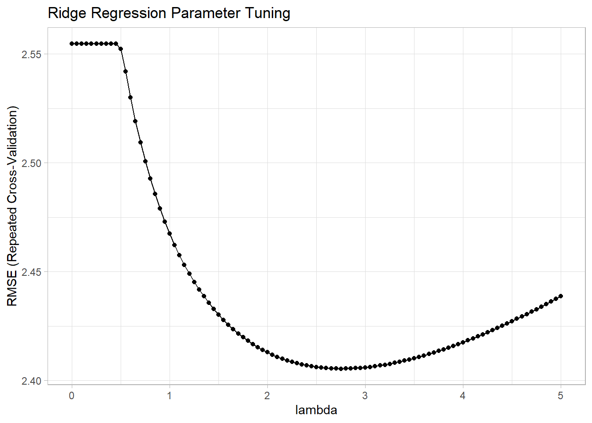
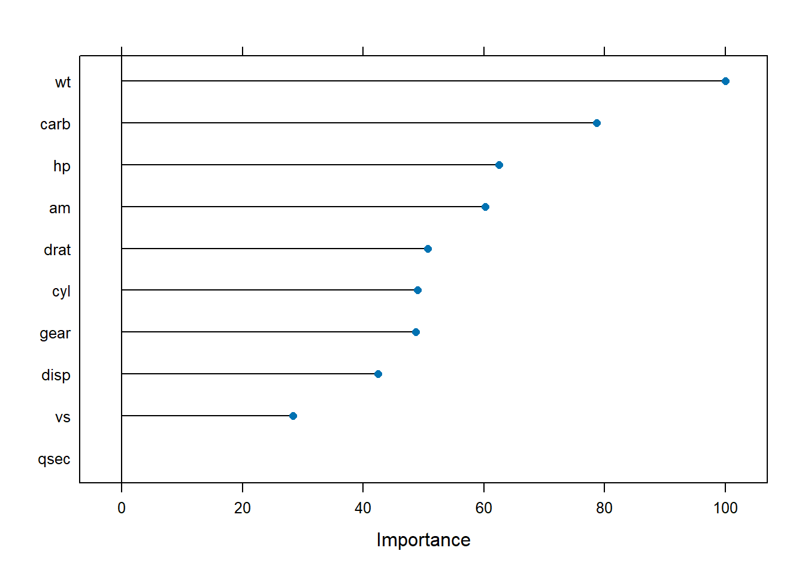
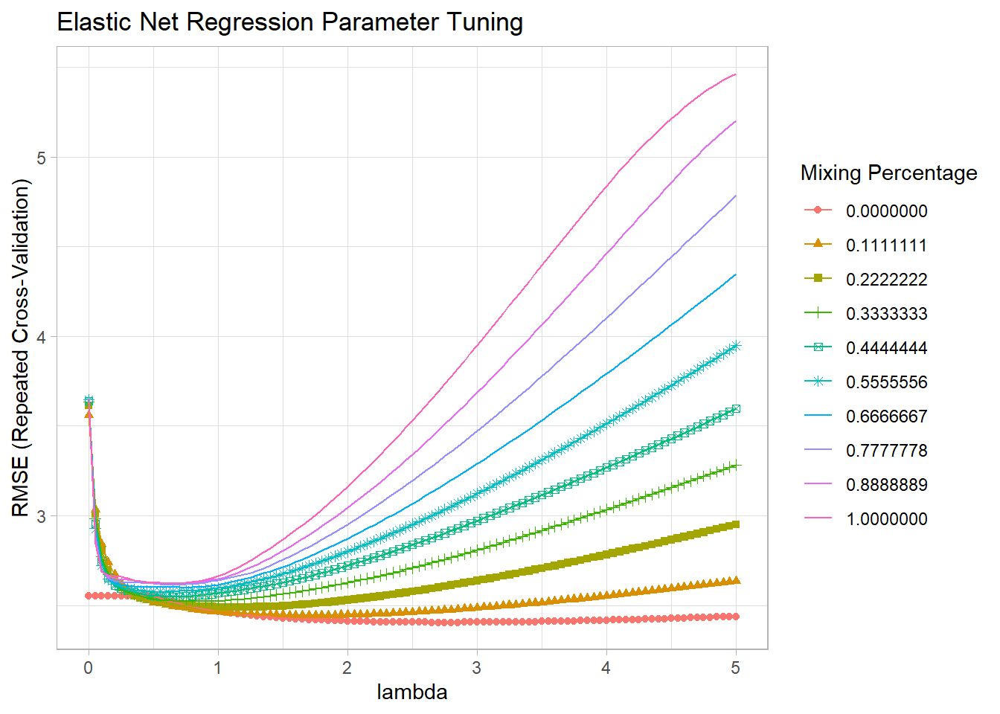
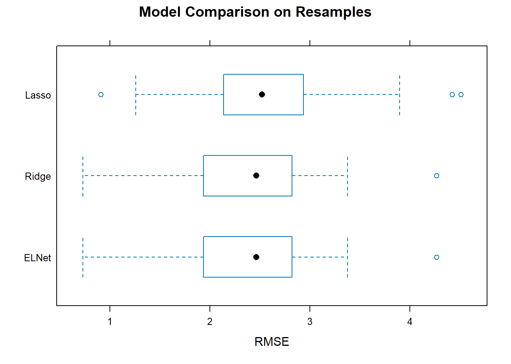

Chapter 5 Regularization
These notes are from this tutorial on DataCamp, the Machine Learning Toolbox DataCamp class, and Interpretable Machine Learning (Molnar 2020).
Regularization is a set of methods that manage the bias-variance trade-off problem in linear regression.
The linear regression model is \(Y = X \beta + \epsilon\), where \(\epsilon \sim N(0, \sigma^2)\). OLS estimates the coefficients by minimizing the loss function
\[L = \sum_{i = 1}^n \left(y_i - x_i^{'} \hat\beta \right)^2.\]
The resulting estimate for the coefficients is
\[\hat{\beta} = \left(X'X\right)^{-1}\left(X'Y\right).\]
There are two important characteristics of any estimator: its bias and its variance. For OLS, these are
\[Bias(\hat{\beta}) = E(\hat{\beta}) - \beta = 0\] and
\[Var(\hat{\beta}) = \sigma^2(X'X)^{-1}\]
where the unknown population variance \(\sigma^2\) is estimated from the residuals
\[\hat\sigma^2 = \frac{\epsilon' \epsilon}{n - k}.\]
The OLS estimator is unbiased, but can have a large variance when the predictor variables are highly correlated with each other, or when there are many predictors (notice how \(\hat{\sigma}^2\) increases as \(k \rightarrow n\)). Stepwise selection balances the trade-off by eliminating variables, but this throws away information. Regularization keeps all the predictors, but reduces coefficient magnitudes to reduce variance at the expense of some bias.
In the sections below, I’ll use the mtcars data set to predict mpg from the other variables using the caret::glmnet() function. glmnet() uses penalized maximum likelihood to fit generalized linear models such as ridge, lasso, and elastic net. I’ll compare the model performances by creating a training and validation set, and a common trainControl object to make sure the models use the same observations in the cross-validation folds.
library(tidyverse)
library(caret)
data("mtcars")
set.seed(123)
partition <- createDataPartition(mtcars$mpg, p = 0.8, list = FALSE)
training <- mtcars[partition, ]
testing <- mtcars[-partition, ]
train_control <- trainControl(
method = "repeatedcv",
number = 5,
repeats = 5,
savePredictions = "final" # saves predictions from optimal tuning parameters
)5.1 Ridge
Ridge regression estimates the linear model coefficients by minimizing an augmented loss function which includes a term, \(\lambda\), that penalizes the magnitude of the coefficient estimates,
\[L = \sum_{i = 1}^n \left(y_i - x_i^{'} \hat\beta \right)^2 + \lambda \sum_{j=1}^k \hat{\beta}_j^2.\]
The resulting estimate for the coefficients is
\[\hat{\beta} = \left(X'X + \lambda I\right)^{-1}\left(X'Y \right).\]
As \(\lambda \rightarrow 0\), ridge regression approaches OLS. The bias and variance for the ridge estimator are
\[Bias(\hat{\beta}) = -\lambda \left(X'X + \lambda I \right)^{-1} \beta\] \[Var(\hat{\beta}) = \sigma^2 \left(X'X + \lambda I \right)^{-1}X'X \left(X'X + \lambda I \right)^{-1}\]
The estimator bias increases with \(\lambda\) and the estimator variance decreases with \(\lambda\). The optimal level for \(\lambda\) is the one that minimizes the root mean squared error (RMSE) or the Akaike or Bayesian Information Criterion (AIC or BIC), or R-squared.
Example
Specify alpha = 0 in a tuning grid for ridge regression (the following sections reveal how alpha distinguishes ridge, lasso, and elastic net). Note that I standardize the predictors in the preProcess step - ridge regression requires standardization.
set.seed(1234)
mdl_ridge <- train(
mpg ~ .,
data = training,
method = "glmnet",
metric = "RMSE", # Choose from RMSE, RSquared, AIC, BIC, ...others?
preProcess = c("center", "scale"),
tuneGrid = expand.grid(
.alpha = 0, # optimize a ridge regression
.lambda = seq(0, 5, length.out = 101)
),
trControl = train_control
)
mdl_ridge## glmnet
##
## 28 samples
## 10 predictors
##
## Pre-processing: centered (10), scaled (10)
## Resampling: Cross-Validated (5 fold, repeated 5 times)
## Summary of sample sizes: 21, 24, 22, 21, 24, 21, ...
## Resampling results across tuning parameters:
##
## lambda RMSE Rsquared MAE
## 0.00 2.554751 0.8788756 2.234470
## 0.05 2.554751 0.8788756 2.234470
## 0.10 2.554751 0.8788756 2.234470
## 0.15 2.554751 0.8788756 2.234470
## 0.20 2.554751 0.8788756 2.234470
## 0.25 2.554751 0.8788756 2.234470
## 0.30 2.554751 0.8788756 2.234470
## 0.35 2.554751 0.8788756 2.234470
## 0.40 2.554751 0.8788756 2.234470
## 0.45 2.554594 0.8789255 2.234683
## 0.50 2.552197 0.8791114 2.233333
## 0.55 2.541833 0.8793654 2.225176
## 0.60 2.529913 0.8798195 2.215643
## 0.65 2.519126 0.8803007 2.206810
## 0.70 2.509440 0.8807077 2.198506
## 0.75 2.500730 0.8810505 2.190795
## 0.80 2.492807 0.8813491 2.183807
## 0.85 2.485563 0.8816140 2.177294
## 0.90 2.478997 0.8818405 2.171425
## 0.95 2.472966 0.8820389 2.165789
## 1.00 2.467383 0.8822118 2.160407
## 1.05 2.462264 0.8823596 2.155277
## 1.10 2.457491 0.8824959 2.150329
## 1.15 2.453096 0.8826143 2.145577
## 1.20 2.448994 0.8827201 2.141010
## 1.25 2.445283 0.8828075 2.136689
## 1.30 2.441821 0.8828813 2.132518
## 1.35 2.438632 0.8829440 2.128488
## 1.40 2.435595 0.8829971 2.124567
## 1.45 2.432766 0.8830499 2.120776
## 1.50 2.430196 0.8830912 2.117202
## 1.55 2.427779 0.8831246 2.113911
## 1.60 2.425544 0.8831528 2.110735
## 1.65 2.423506 0.8831710 2.107696
## 1.70 2.421585 0.8831843 2.104720
## 1.75 2.419833 0.8831973 2.101850
## 1.80 2.418232 0.8832041 2.099074
## 1.85 2.416707 0.8832052 2.096356
## 1.90 2.415308 0.8832049 2.093724
## 1.95 2.414077 0.8831966 2.091421
## 2.00 2.412915 0.8831858 2.089232
## 2.05 2.411832 0.8831731 2.087084
## 2.10 2.410862 0.8831612 2.084999
## 2.15 2.410002 0.8831449 2.082982
## 2.20 2.409207 0.8831253 2.081117
## 2.25 2.408493 0.8831033 2.079633
## 2.30 2.407877 0.8830816 2.078216
## 2.35 2.407362 0.8830560 2.076947
## 2.40 2.406888 0.8830284 2.075738
## 2.45 2.406463 0.8829988 2.074538
## 2.50 2.406109 0.8829717 2.073390
## 2.55 2.405864 0.8829408 2.072316
## 2.60 2.405693 0.8829069 2.071291
## 2.65 2.405542 0.8828717 2.070256
## 2.70 2.405448 0.8828350 2.069254
## 2.75 2.405415 0.8827999 2.068291
## 2.80 2.405452 0.8827624 2.067369
## 2.85 2.405539 0.8827235 2.066542
## 2.90 2.405637 0.8826837 2.065770
## 2.95 2.405780 0.8826424 2.065242
## 3.00 2.405964 0.8826039 2.064761
## 3.05 2.406229 0.8825637 2.064336
## 3.10 2.406541 0.8825222 2.063945
## 3.15 2.406876 0.8824799 2.063540
## 3.20 2.407231 0.8824370 2.063120
## 3.25 2.407628 0.8823943 2.062722
## 3.30 2.408062 0.8823537 2.062348
## 3.35 2.408562 0.8823110 2.062118
## 3.40 2.409100 0.8822673 2.062037
## 3.45 2.409655 0.8822228 2.061944
## 3.50 2.410216 0.8821782 2.061828
## 3.55 2.410808 0.8821331 2.061723
## 3.60 2.411432 0.8820899 2.061639
## 3.65 2.412102 0.8820470 2.061577
## 3.70 2.412809 0.8820035 2.061543
## 3.75 2.413551 0.8819589 2.061568
## 3.80 2.414295 0.8819141 2.061655
## 3.85 2.415055 0.8818687 2.061734
## 3.90 2.415843 0.8818234 2.062062
## 3.95 2.416658 0.8817793 2.062424
## 4.00 2.417511 0.8817359 2.062798
## 4.05 2.418400 0.8816915 2.063183
## 4.10 2.419316 0.8816465 2.063584
## 4.15 2.420238 0.8816012 2.063970
## 4.20 2.421163 0.8815562 2.064598
## 4.25 2.422110 0.8815102 2.065248
## 4.30 2.423081 0.8814658 2.065910
## 4.35 2.424072 0.8814226 2.066657
## 4.40 2.425104 0.8813791 2.067521
## 4.45 2.426155 0.8813356 2.068385
## 4.50 2.427230 0.8812914 2.069250
## 4.55 2.428308 0.8812470 2.070099
## 4.60 2.429387 0.8812029 2.070929
## 4.65 2.430482 0.8811578 2.071757
## 4.70 2.431595 0.8811139 2.072827
## 4.75 2.432731 0.8810710 2.073935
## 4.80 2.433886 0.8810292 2.075036
## 4.85 2.435074 0.8809864 2.076150
## 4.90 2.436276 0.8809438 2.077259
## 4.95 2.437498 0.8809006 2.078371
## 5.00 2.438716 0.8808576 2.079462
##
## Tuning parameter 'alpha' was held constant at a value of 0
## RMSE was used to select the optimal model using the smallest value.
## The final values used for the model were alpha = 0 and lambda = 2.75.The model printout shows the RMSE, R-Squared, and mean absolute error (MAE) values at each lambda specified in the tuning grid. The final three lines summarize what happened. It did not tune alpha because I held it at 0 for ridge regression; it optimized using RMSE; and the optimal tuning values (at the minimum RMSE) were alpha = 0 and lambda = 2.75. You plot the model to see the tuning results.

varImp() ranks the predictors by the absolute value of the coefficients in the tuned model. The most important variables here were wt, disp, and am.

5.2 Lasso
Lasso stands for “least absolute shrinkage and selection operator”. Like ridge, lasso adds a penalty for coefficients, but instead of penalizing the sum of squared coefficients (L2 penalty), lasso penalizes the sum of absolute values (L1 penalty). As a result, for high values of \(\lambda\), coefficients can be zeroed under lasso.
The loss function for lasso is
\[L = \sum_{i = 1}^n \left(y_i - x_i^{'} \hat\beta \right)^2 + \lambda \sum_{j=1}^k \left| \hat{\beta}_j \right|.\]
Example
Continuing with prediction of mpg from the other variables in the mtcars data set, follow the same steps as before, but with ridge regression. This time specify parameter alpha = 1 for ridge regression (it was 0 for ridge, and for elastic net it will be something in between and require optimization).
set.seed(1234)
mdl_lasso <- train(
mpg ~ .,
data = training,
method = "glmnet",
metric = "RMSE",
preProcess = c("center", "scale"),
tuneGrid = expand.grid(
.alpha = 1, # optimize a lasso regression
.lambda = seq(0, 5, length.out = 101)
),
trControl = train_control
)## Warning in nominalTrainWorkflow(x = x, y = y, wts = weights, info = trainInfo,
## : There were missing values in resampled performance measures.## alpha lambda
## 14 1 0.65The summary output shows the model did not tune alpha because I held it at 1 for lasso regression. The optimal tuning values (at the minimum RMSE) were alpha = 1 and lambda = 0.65. You can see the RMSE minimum on the the plot.
5.3 Elastic Net
Elastic Net combines the penalties of ridge and lasso to get the best of both worlds. The loss function for elastic net is
\[L = \frac{\sum_{i = 1}^n \left(y_i - x_i^{'} \hat\beta \right)^2}{2n} + \lambda \frac{1 - \alpha}{2}\sum_{j=1}^k \hat{\beta}_j^2 + \lambda \alpha\left| \hat{\beta}_j \right|.\]
In this loss function, new parameter \(\alpha\) is a “mixing” parameter that balances the two approaches. If \(\alpha\) is zero, you are back to ridge regression, and if \(\alpha\) is one, you are back to lasso.
Example
Continuing with prediction of mpg from the other variables in the mtcars data set, follow the same steps as before, but with elastic net regression there are two parameters to optimize: \(\lambda\) and \(\alpha\).
set.seed(1234)
mdl_elnet <- train(
mpg ~ .,
data = training,
method = "glmnet",
metric = "RMSE",
preProcess = c("center", "scale"),
tuneGrid = expand.grid(
.alpha = seq(0, 1, length.out = 10), # optimize an elnet regression
.lambda = seq(0, 5, length.out = 101)
),
trControl = train_control
)## Warning in nominalTrainWorkflow(x = x, y = y, wts = weights, info = trainInfo,
## : There were missing values in resampled performance measures.## alpha lambda
## 56 0 2.75The optimal tuning values (at the mininum RMSE) were alpha = 0.0 and lambda = 2.75, so the mix is 100% ridge, 0% lasso. You can see the RMSE minimum on the the plot. Alpha is on the horizontal axis and the different lambdas are shown as separate series.
## Warning: The shape palette can deal with a maximum of 6 discrete values because
## more than 6 becomes difficult to discriminate; you have 10. Consider
## specifying shapes manually if you must have them.## Warning: Removed 404 rows containing missing values (`geom_point()`).
Model Summary
Make predictions on the validation data set for each of the three models.
pr_ridge <- postResample(pred = predict(mdl_ridge, newdata = testing), obs = testing$mpg)
pr_lasso <- postResample(pred = predict(mdl_lasso, newdata = testing), obs = testing$mpg)
pr_elnet <- postResample(pred = predict(mdl_elnet, newdata = testing), obs = testing$mpg)## RMSE Rsquared MAE
## pr_ridge 3.745350 0.9007955 2.761726
## pr_lasso 4.032868 0.9734421 3.009135
## pr_elnet 3.745350 0.9007955 2.761726It looks like ridge/elnet was the big winner today based on RMSE and MAE. Lasso had the best Rsquared though. On average, ridge/elnet will miss the true value of mpg by 3.75 mpg (RMSE) or 2.76 mpg (MAE). The model explains about 90% of the variation in mpg.
You can also compare the models by resampling.
model.resamples <- resamples(list(Ridge = mdl_ridge,
Lasso = mdl_lasso,
ELNet = mdl_elnet))
summary(model.resamples)##
## Call:
## summary.resamples(object = model.resamples)
##
## Models: Ridge, Lasso, ELNet
## Number of resamples: 25
##
## MAE
## Min. 1st Qu. Median Mean 3rd Qu. Max. NA's
## Ridge 0.6614059 1.587531 2.179524 2.068291 2.523411 3.527409 0
## Lasso 0.8148722 1.862340 2.237722 2.272930 2.596078 3.985098 0
## ELNet 0.6614059 1.587531 2.179524 2.068291 2.523411 3.527409 0
##
## RMSE
## Min. 1st Qu. Median Mean 3rd Qu. Max. NA's
## Ridge 0.7325538 1.935884 2.462086 2.405415 2.820892 4.264528 0
## Lasso 0.9083703 2.138883 2.521894 2.623880 2.934442 4.506856 0
## ELNet 0.7325538 1.935884 2.462086 2.405415 2.820892 4.264528 0
##
## Rsquared
## Min. 1st Qu. Median Mean 3rd Qu. Max. NA's
## Ridge 0.6919630 0.8357446 0.8904019 0.8827999 0.9382490 0.9791672 0
## Lasso 0.6263831 0.8100574 0.8656579 0.8593787 0.9407846 0.9955706 0
## ELNet 0.6919630 0.8357446 0.8904019 0.8827999 0.9382490 0.9791672 0You want the smallest mean RMSE, and a small range of RMSEs. Ridge/elnet had the smallest mean, and a relatively small range. Boxplots are a common way to visualize this information.

Now that you have identified the optimal model, capture its tuning parameters and refit the model to the entire data set.
set.seed(123)
mdl_final <- train(
mpg ~ .,
data = training,
method = "glmnet",
metric = "RMSE",
preProcess = c("center", "scale"),
tuneGrid = data.frame(
.alpha = mdl_ridge$bestTune$alpha, # optimized hyperparameters
.lambda = mdl_ridge$bestTune$lambda), # optimized hyperparameters
trControl = train_control
)
mdl_final## glmnet
##
## 28 samples
## 10 predictors
##
## Pre-processing: centered (10), scaled (10)
## Resampling: Cross-Validated (5 fold, repeated 5 times)
## Summary of sample sizes: 22, 22, 23, 22, 23, 23, ...
## Resampling results:
##
## RMSE Rsquared MAE
## 2.441704 0.8884221 2.115503
##
## Tuning parameter 'alpha' was held constant at a value of 0
## Tuning
## parameter 'lambda' was held constant at a value of 2.75The model is ready to predict on new data! Here are some final conclusions on the models.
- Lasso can set some coefficients to zero, thus performing variable selection.
- Lasso and Ridge address multicollinearity differently: in ridge regression, the coefficients of correlated predictors are similar; In lasso, one of the correlated predictors has a larger coefficient, while the rest are (nearly) zeroed.
- Lasso tends to do well if there are a small number of significant parameters and the others are close to zero. Ridge tends to work well if there are many large parameters of about the same value.
- In practice, you don’t know which will be best, so run cross-validation pick the best.